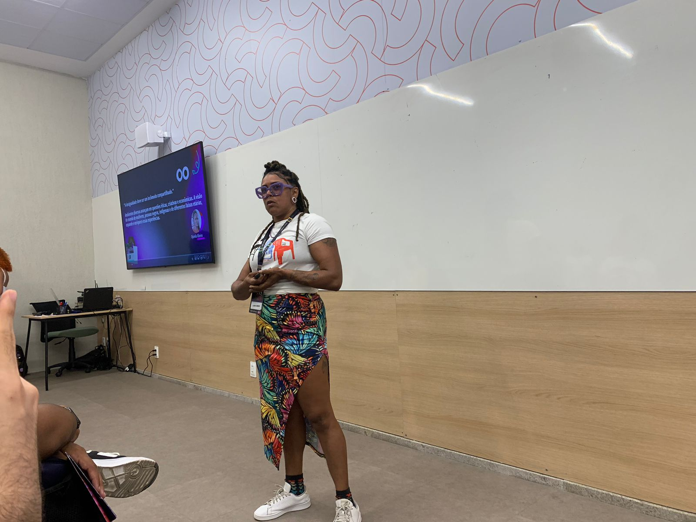
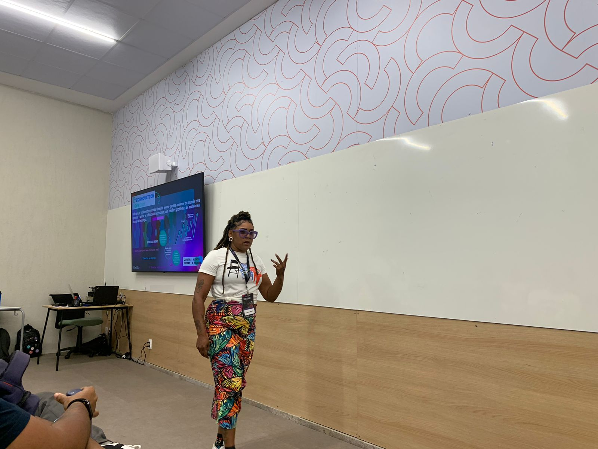

Minhas Postagens
Empoderando Mulheres na Tecnologia
A inclusão de mulheres na tecnologia é uma das minhas maiores motivações. Acredito que a diversidade é a chave para a inovação e que mulheres podem transformar o cenário tecnológico com suas perspectivas únicas. Por isso, dedico meu tempo a iniciativas que promovem a inclusão e empoderamento feminino no setor.zir a disparidade na expectativa de vida entre pessoas trans e cis no Brasil. Experiências: Mentoria no Technovation Girls: Apoiei jovens meninas na criação de aplicativos e soluções tecnológicas, mostrando que a tecnologia também é um espaço para elas. Oficinas e Palestras: Facilitei workshops sobre introdução à programação e ferramentas de desenvolvimento, voltados exclusivamente para mulheres. Projeto Elas na Parada: Trabalhei em um projeto que desenvolveu soluções tecnológicas para tornar o transporte público mais seguro para mulheres, integrando tecnologia com impacto social. Habilidades Aplicadas: Desenvolvimento de soluções tecnológicas (HTML, CSS, JavaScript). Organização de atividades educacionais com foco em diversidade. Comunicação para inspirar e engajar novas participantes. Meu Objetivo: Continuar contribuindo para um ambiente tecnológico mais diverso, criando oportunidades e mostrando que o setor de tecnologia pode ser inclusivo, acolhedor e transformador para todas.
Equidade no Código: A Influência das Desenvolvedoras na Criação de Algoritmos Justos
Tive a honra de palestrar no REC'n'Play sobre um tema que considero essencial: Equidade no Código. Durante a apresentação, abordei como a presença de mulheres desenvolvedoras nas equipes de tecnologia não só promove a diversidade, mas também contribui diretamente para a criação de algoritmos mais justos e inclusivos. Pontos de Discussão: O impacto positivo da diversidade de gênero em equipes de desenvolvimento na redução de vieses nos algoritmos. Exemplos práticos de como a equidade de gênero pode influenciar desde a coleta de dados até as decisões de implementação. Reflexões sobre como mulheres desenvolvedoras trazem perspectivas únicas e essenciais para a tecnologia. Por que isso importa? Em um mundo onde os algoritmos moldam desde recomendações online até decisões sociais importantes, garantir que eles sejam projetados com justiça e inclusão é vital. Diversidade nas equipes é um passo essencial para isso. Reflexão: Mais do que um convite para mulheres ingressarem na tecnologia, a palestra foi um chamado para repensarmos como nossas equipes e projetos podem se tornar mais equitativos, fortalecendo tanto o setor quanto a sociedade. Agradecimento: Gratidão ao REC'n'Play pela oportunidade de compartilhar ideias e aprender com tantas mentes incríveis. Vamos juntas transformar a tecnologia!  
Um poco sobre mim
- Email: carolribeiro@example.com
- Data de Nascimento: 07/03/1980
- Localização: Recife, Brasil